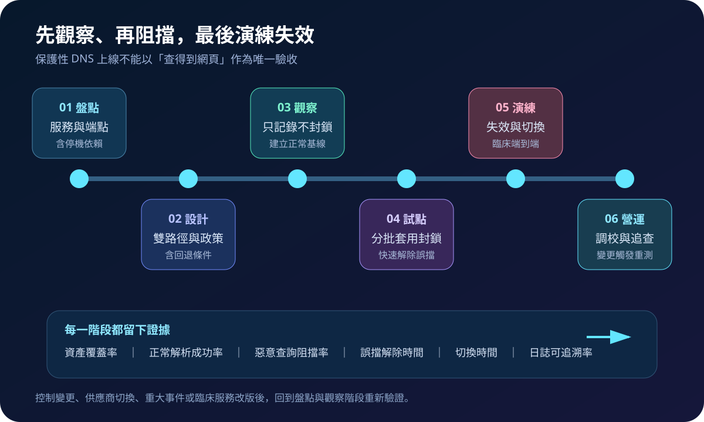
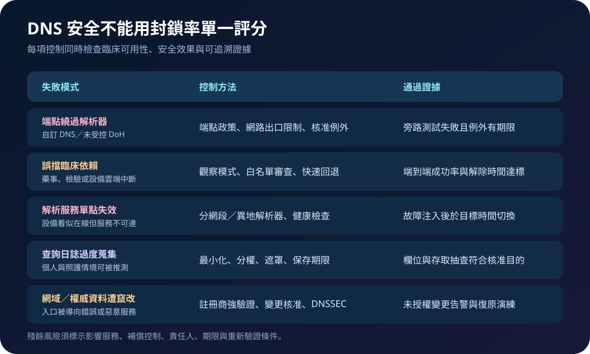

醫療資安國際觀察 · 2026-09-01
醫療名稱解析如何兼顧阻擋與不中斷：保護性 DNS 的韌性驗收
作者：Dr. William｜醫療資訊與資安治理實務工作者
電子病歷、影像、檢驗、藥事與設備雲端服務都可能依賴名稱解析。保護性 DNS 能在連線前阻擋已知惡意目的地，但若解析器、政策或上游路徑失效，也可能讓正常臨床服務同時中斷。
名詞解釋：保護性 DNS、DNSSEC 與加密 DNS
protective DNS 在遞迴解析時套用威脅情報與政策，可拒絕、重導或 sinkhole 惡意網域並產生告警。DNSSEC 以數位簽章驗證 DNS 資料完整性與來源，並不負責加密查詢。DoH／DoT 分別透過 HTTPS 或 TLS 保護傳輸；若端點自行連向未受控解析器，可能繞過院內過濾與事件追查，因此加密與治理必須一起規劃。
國際現況與適用邊界
NIST SP 800-81 Rev. 3 於 2026 年 3 月發布，將 DNS 視為零信任與縱深防禦的基礎控制，建議在技術可行時採用保護性 DNS、加密 DNS 流量、部署 DNSSEC，並以網路及地理分散提升可用性。文件同時要求把查詢、回應、封鎖及重導事件送往 SIEM／SOAR，支援事件調查。CISA 的 Protective DNS Resolver 則展示上游過濾如何涵蓋機關網路、行動、漫遊與雲端資產，命中威脅指標時可封鎖、重導或 sinkhole。
法域與效力：NIST 文件是美國聯邦資訊系統指引，CISA 服務主要供美國聯邦文職機關，並僅有限度開放關鍵基礎設施試辦；兩者不是台灣醫院的法定架構或可直接申用服務。台灣醫療機構可採其分層控制與驗收方法，實際資料處理、日誌保存、供應商選擇及 DNSSEC 部署仍須依本地規範、契約與臨床風險決定。
規劃：先找出名稱解析失效會影響哪些照護
範圍應從一條高影響臨床路徑盤點工作站、醫療設備、院內網域、外部 API、雲端平台、行動端與第三方遠端維運，並標示各端點實際使用的解析器。角色至少包含網路、資安、系統、臨床工程、隱私、服務負責人與供應商。驗收指標可採受控解析覆蓋率、正常解析成功率、惡意查詢阻擋率、端點歸屬率、誤擋解除時間、備援切換時間及日誌可用率。

實作：把阻擋、切換與追查做成同一套流程
- 建立解析地圖：找出內外部權威區域、轉送器、遞迴服務、固定 DNS 設備與未受控 DoH／DoT。
- 設計故障域：主備解析器分置網段與位置，明定健康檢查、切換、快取及回退條件。
- 觀察後封鎖：先記錄查詢與政策命中，排除臨床誤擋，再由低風險網段逐步啟用控制。
- 整合事件應變：將封鎖、重導、解析失敗及組態變更送入監控，保留端點歸屬與政策版本。
- 演練失效：模擬單一解析器中斷、上游不可達、錯誤政策及權威紀錄遭改，驗證切換與復原。
風險：封鎖有效不代表服務可靠
常見失敗包括端點繞過受控解析、白名單永久化、過濾誤擋臨床 API、雙解析器仍位於同一故障域，以及查詢日誌保存過多而產生隱私風險。網域註冊與權威紀錄若缺乏強式驗證、變更核准及告警，也可能讓正確名稱被導向錯誤服務。各項例外應記錄用途、影響服務、責任人、期限與重測條件。

可執行清單
- 高影響臨床服務是否有完整名稱解析依賴與端點清冊？
- 主備解析器是否真正分離網段、位置、權限與上游路徑？
- 未受控 DNS、DoH 與 DoT 是否可偵測、限制並管理例外？
- 政策上線前是否完成觀察模式、臨床試點與快速回退？
- 查詢日誌是否最小化欄位、限制存取並設定保存期限？
- 解析失效、誤擋與權威紀錄變更是否已完成演練？
來源
- NIST｜SP 800-81 Rev. 3, Secure Domain Name System (DNS) Deployment Guide（發布：2026-03；查閱：2026-09-01）
- CISA｜Protective Domain Name System (DNS) Resolver（服務啟動：2022；查閱：2026-09-01）
- CISA｜DNS Infrastructure Hijacking Campaign（發布：2019-01-10；查閱：2026-09-01）
內容說明
本文依健康台灣深耕計畫相關治理內容整理，並參考 NIST 與 CISA 公開資料，提出台灣醫療機構可採用的名稱解析安全與韌性驗收框架；不取代主管機關正式公告、法律意見、供應商設計或個案臨床決策。